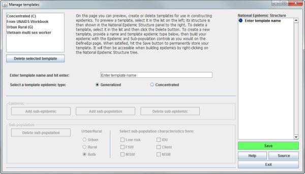
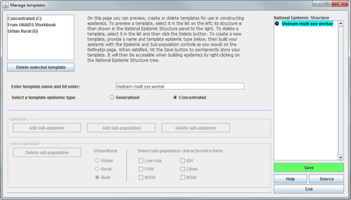

A template is a predefined epidemic structure, as described in the help for the Define Epi page. EPP provides three default templates, one for urban/rural epidemics, another for concentrated epidemics and another for Workbook fits. However, often countries have a need to define their own custom templates reflecting the groups in their specific surveillance system, the nature of their local epidemic, or other local factors. They may wish to use these as templates for regional sub-epidemics to avoid having to create a large number of sub-populations by hand.
Creation of new templates is done by clicking on the Manage templates button on the Define Epi page.
An EPP template includes the following items:
Once defined it will be added to the list of templates brought up by right clicking on the national epidemic or a sub-epidemic on the Define Epi page. If selected, it will then be added at the corresponding national or sub-epidemic level.
On the Define Epi page, there is a button labeled “Manage templates” in the lower left hand corner, circled in red below.
When this button is pushed, it brings up the Manage Templates Page, shown in the figure below:

In structure, this is very similar to the Define Epi page, because just like that page it is used to add a set of sub-epidemics and sub-populations. The only difference is that on the Define Epi page these sub-epidemics and sub-populations are being added to the national epidemic, but here they are being added to the template. However, the template has the advantage of being reusable, i.e., once created and saved you can add it to a national epidemic or a sub-epidemic as easily as you can add the Urban Rural (G) template.
There are really only two things you can do on this page. You can create a template or you can delete one. The steps in creating a template are:
The figure below shows the result of doing these first three steps for a template named “Vietnam multi sex worker” that will allow for two different groups of sex workers, karaoke based sex workers (KSW) and street-based sex workers (SBSW).

This figure shows the result of building the Vietnam multi sex worker template by right clicking on “Vietnam multi sex worker” in the National Epidemic Structure panel, adding the original Concentrated (C) template to this new template with a right click, deleting the original sex worker sub-population with the “Delete sub-population” button and adding two sub-populations for KSW and SBSW with the “Add sub-population” button.
After adding these two sub-populations, remember to set both of them to be sex worker populations by clicking on their name in the National Epidemic Structure panel and then checking the box next to “FSW” in the middle of the page (as shown in the previous figure for SBSW).
Now if you right-click on the national epidemic in the National Epidemic Structure panel, you will see your new template added to the list of available templates:
If you select it, it will be added to the national epidemic, just as any other template would be.
The other option on this page is to delete an existing template. This is done by selecting the template in the list in the upper left-hand corner and then clicking the “Delete selected template” button. This will completely remove the template from the system and it will no longer be available. Please note that it is impossible to delete the default templates, and any attempt to do so will generate an error message: “You cannot delete default templates”.